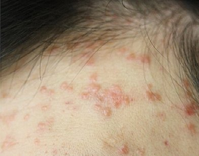

앞머리를 내리는 스타일로 바꾼 뒤부터 이마 위쪽에 납작한 알갱이가 하나둘 늘었다거나, 헬멧을 매일 쓰는 출퇴근 길 이후 헤어라인을 따라 오돌토돌한 것이 생겼다며 상담을 청하시는 분들이 있습니다. 바닷바람이 센 제주에서는 머리를 고정하려고 스프레이나 왁스를 자주 쓰고, 햇볕을 가리려 모자를 오래 쓰는 생활도 흔합니다. 이런 머리 주변의 일상은 그 자체로 병을 만들지는 않지만, 이미 자리 잡은 편평사마귀가 옆으로 퍼질 기회를 늘릴 수 있습니다. 어떤 지점에서 영향을 주고 무엇을 바꾸면 좋을지 차례로 살펴보겠습니다.
이마와 헤어라인에 편평사마귀가 잘 보이는 까닭은 무엇인가요?
이마와 헤어라인은 머리카락, 손, 모자 테두리가 하루 내내 번갈아 닿는 곳이라 작은 마찰과 미세한 틈이 반복되기 쉬운 부위입니다. 편평사마귀는 사람유두종바이러스가 피부 겉층의 작은 상처로 들어가 머물면서 생기는 납작하고 매끈한 돌기로, 살구색이나 연한 갈색을 띠어 처음에는 잘 눈에 띄지 않습니다. 이마는 피지가 많고 머리카락이 스치는 경계라 각질이 들뜨거나 가벼운 염증이 생기는 일도 잦아, 바이러스가 머물 자리가 생기기 쉽습니다. 또 거울을 볼 때 가장 먼저 보이는 위치여서 몇 개만 생겨도 신경이 쓰이고, 그만큼 손이 자주 가게 된다는 점도 함께 작용합니다.

앞머리가 닿는 자리는 왜 더 신경 써야 하나요?
앞머리 끝이 같은 자리를 계속 쓸고 지나가면 피부가 가볍게 자극받고, 머리카락에 묻은 피지와 제품이 그 위에 머무르면서 돌기 주변이 예민해질 수 있습니다. 앞머리가 덮고 있는 이마는 바람이 잘 통하지 않아 땀과 열이 고이기 쉽고, 오후가 되면 번들거림과 가려움이 함께 올라오기도 합니다. 가려운 곳을 손끝으로 긁거나 앞머리를 계속 쓸어 넘기다 보면, 돌기에 닿은 손이 바로 옆 피부에 닿게 됩니다. 앞머리를 완전히 없앨 필요는 없지만, 집에서는 핀이나 머리띠로 넘겨 이마가 숨 쉴 시간을 주고, 앞머리 자체를 자주 감아 깨끗하게 유지하는 것이 도움이 될 수 있습니다.
모자와 헬멧을 오래 쓰면 어떤 영향이 있나요?
모자나 헬멧은 테두리가 닿는 이마 띠 부분에 압박과 땀, 반복 마찰을 동시에 주기 때문에 이미 있는 돌기가 자극받고 주변으로 옮겨 갈 여지를 만들 수 있습니다. 오토바이나 전동 킥보드, 자전거로 이동하거나 야외 작업을 하시는 분들은 헬멧 안쪽 패드가 같은 위치를 하루 몇 시간씩 누르게 됩니다. 패드와 모자 안감은 땀과 피지를 머금은 채 다시 피부에 닿으므로, 여러 사람이 돌려 쓰는 경우라면 위생 관리가 더욱 중요합니다.
| 사용 습관 | 이마에 생기는 일 | 바꿔 볼 수 있는 방법 |
|---|---|---|
| 같은 모자를 며칠씩 계속 착용 | 안감에 쌓인 땀과 피지가 테두리 자리에 다시 닿음 | 두세 개를 번갈아 쓰고 안쪽 밴드를 자주 세탁 |
| 헬멧을 장시간 착용 | 패드가 같은 띠 모양으로 누르며 열과 습기가 고임 | 얇은 면 이너캡을 덧쓰고 쉬는 동안 벗어 땀 말리기 |
| 모자·헬멧을 다른 사람과 함께 사용 | 다른 사람의 피부 분비물이 이마에 닿을 수 있음 | 개인용을 따로 두거나 사용 전후 안쪽 닦기 |
| 꽉 끼는 사이즈 선택 | 압박 자국과 쓸림으로 작은 상처가 생기기 쉬움 | 한 치수 여유 있는 제품으로 조절 |
왁스·스프레이·염색약이 편평사마귀를 자극할 수 있나요?
헤어 제품 자체가 바이러스를 옮기지는 않지만, 이마와 헤어라인 피부에 묻어 장벽을 약하게 하면 돌기가 붉어지거나 번지기 좋은 환경이 될 수 있습니다. 왁스나 젤은 손바닥에 펴 바른 뒤 앞머리를 정리하는 과정에서 이마에도 함께 묻고, 스프레이는 얼굴 쪽으로 흩날려 피부 위에 얇은 막을 남깁니다. 염색약과 탈색제는 두피 경계를 따라 따가움과 각질을 일으킬 수 있어, 돌기가 몰려 있는 부위라면 더 조심하는 편이 좋습니다.
| 제품 | 이마에 닿는 경로 | 사용할 때 요령 |
|---|---|---|
| 왁스·젤·포마드 | 손에 묻은 제품이 앞머리 정리 중 이마로 옮겨 감 | 바른 뒤 곧바로 손을 씻고, 헤어라인 바로 앞에는 덜 바르기 |
| 헤어스프레이 | 분사 입자가 얼굴 쪽으로 흩날림 | 손이나 종이로 이마를 가리고 머리 뒤쪽에서 분사 |
| 염색약·탈색제 | 두피 경계를 따라 피부에 직접 닿음 | 헤어라인에 보습제를 얇게 펴 두고, 돌기 주변은 시술자에게 미리 알리기 |
| 헤어 오일·에센스 | 베개와 손을 거쳐 이마에 남음 | 모발 끝 위주로 바르고 잠들기 전 세안하기 |
머리를 자주 만지는 손 습관은 왜 문제가 되나요?
앞머리를 넘기거나 잔머리를 정리하는 손짓은 하루에도 수십 번 반복되는데, 그때마다 손끝이 돌기와 주변 피부를 번갈아 건드려 바이러스를 옮기는 통로가 될 수 있습니다. 특히 헤어라인의 오돌토돌한 부분이 손에 걸리면 확인하듯 문지르거나 손톱으로 떼어 내고 싶어지는데, 이렇게 생긴 상처를 따라 새 돌기가 줄지어 생기는 모습이 관찰되기도 합니다. 머리를 묶어 손이 갈 이유를 줄이고, 손톱을 짧게 다듬어 두며, 만지고 싶을 때는 손을 씻는 습관으로 바꾸어 보시기를 권해 드립니다.
헤어라인 돌기가 편평사마귀인지 다른 것인지는 어떻게 아나요?
헤어라인에는 좁쌀여드름, 모낭염, 지루피부염처럼 비슷해 보이는 변화가 함께 생길 수 있어 겉모양만으로 나누기보다 진료에서 직접 확인하는 것이 안전합니다. 편평사마귀는 대체로 표면이 납작하고 매끈하며, 긁힌 자국을 따라 일렬로 이어지거나 여러 개가 모여 있는 경향이 있습니다. 반면 여드름이나 모낭염은 가운데 고름이나 털이 보이고 며칠 사이에 크기가 달라지는 경우가 많습니다. 판단이 어려울 때는 스스로 짜거나 뜯지 말고 그대로 둔 채 확인을 받아 보시는 편이 좋습니다.
침 치료를 받는 동안 헤어 관리는 어떻게 하면 좋을까요?
침 치료 뒤 이마와 헤어라인이 아무는 동안에는 치료 부위에 헤어 제품과 머리카락이 직접 닿지 않도록 하는 것이 회복에 도움이 될 수 있습니다. 후한의원 제주점은 열을 쓰지 않는 침으로 병변마다 깊이를 가늠해 변성된 조직을 덜어 내는 방식만 사용하며, 치료한 자리가 아무는 동안에는 연고나 습윤 밴드로 바깥 자극을 줄이도록 안내해 드립니다. 이 기간에는 왁스와 스프레이를 쉬거나 치료 부위에서 멀리 쓰고, 염색이나 펌은 피부가 충분히 가라앉은 뒤로 미루는 편이 좋습니다. 모자는 치료 부위를 누르지 않는 넉넉한 것으로 고르고, 앞머리는 핀으로 넘겨 두면 딱지가 쓸려 떨어지는 일을 줄일 수 있습니다. 회복 속도와 필요한 치료 횟수에는 개인차가 있습니다.
다시 생기지 않도록 일상에서 무엇을 이어 가면 좋을까요?
치료가 끝난 뒤에도 머리 주변의 작은 습관을 꾸준히 유지하는 것이 새 돌기를 줄이는 데 도움이 될 수 있습니다. 베개 커버와 모자 안감, 헤어밴드를 자주 세탁하고, 빗과 고데기 같은 도구는 다른 사람과 나누어 쓰지 않는 것이 기본입니다. 이마가 건조해지지 않게 보습을 챙기고, 수면과 식사 리듬을 지켜 몸의 방어 상태를 안정적으로 유지하는 것도 중요합니다. 노형동 진료실에서는 정리된 자리 주변에 새로 올라오는 것이 없는지 경과를 함께 살펴보며, 작은 변화가 보일 때 일찍 상의하실 수 있도록 안내해 드립니다.